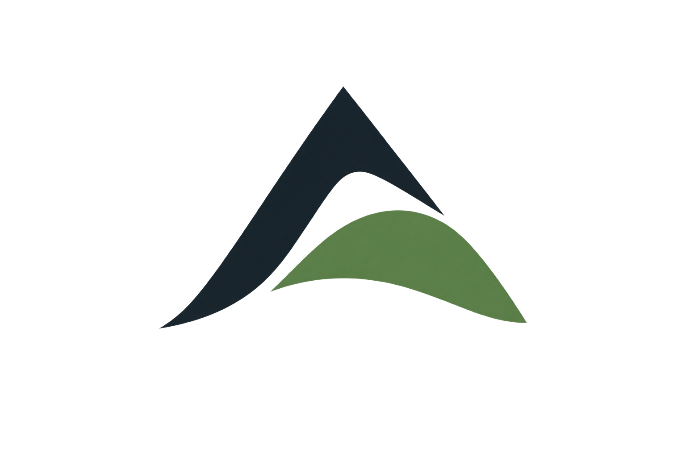

Utviklet i 2026

ArealplanEt verktøy for å gjøre arealplanlegging mer oversiktlig – fra de første prosjektvalgene til faglige avklaringer, bemanning og oppfølging.
- Arealplanlegging
- GIS
- Prosjektstøtte
Produktutvikler
Phong Vuoc Tran
Arealplan er utviklet av Phong Vuoc Tran. Produktet bygger på hans erfaring fra arealplanlegging, GIS og systemutvikling i både privat og offentlig sektor, samt fra ledelse og entreprenørskap.
Utdanning
- Bachelor i geografiNTNU
- Master i fysisk planleggingNTNU
- Master i strategi og ledelseNord universitet · pågående
Erfaring på tvers av fag og sektorer
Phong har erfaring fra både privat og offentlig sektor. I privat sektor har han jobbet som rådgivende konsulent innen arealplanlegging og som GIS-konsulent innen areal og samferdsel. I offentlig sektor har han jobbet som geomatiker og systemutvikler ved Norges geologiske undersøkelse (NGU).
Han har vært entreprenør og startet egen bedrift med ansvar for over ti ansatte. Han eier ikke lenger denne bedriften og satser nå fullt på ingeniørbransjen og produktutvikling.
Spørsmål og svar
Ofte stilte spørsmål
Hva kan jeg bruke Arealplan til?
Du kan tilpasse veiledningen etter plantype, rolle, formål og stedsforhold, lese forklaringer i Plankunnskap og lagre prosjektvalg og fremdrift. Appen foreslår også roller og fagressurser som støtte for ressursplanlegging.
Når ble Arealplan utviklet, og hvem står bak?
Arealplan ble utviklet i 2026 og er laget av Phong Vuoc Tran. Du finner hans bakgrunn og erfaring ovenfor.
Hvor lagres prosjektene mine?
Prosjektene lagres lokalt i nettleseren eller appen på enheten du bruker. De synkroniseres ikke automatisk mellom enheter. Du kan overføre en kopi med «Del prosjekt» og «Importer prosjekt». Nettleser og installert app kan ha separate lagringsområder. Sletting av nettleser- eller appdata kan fjerne prosjektene.
Hvordan deler jeg et prosjekt?
Åpne prosjektet i Mine prosjekter og trykk «Del prosjekt». Velg «Last ned JSON» eller «Send på e-post». E-post bruker enhetens delingsmeny når filvedlegg støttes. Ellers får du hjelp til å laste ned filen og legge den ved i en e-post selv. Mottakeren velger «Importer prosjekt» i Mine prosjekter og åpner filen. Delingen tar med prosjektopplysninger, kontaktopplysninger, notater, scenariovalg og avkrysninger. Det opprettes en ny kopi; senere endringer synkroniseres ikke.
Hvordan installerer jeg appen?
Bruk installasjonsikonet i toppfeltet for veiledning. På Android og i Chrome på datamaskin kan nettleseren tilby installasjon. På iPhone og iPad kan du bruke Chrome eller Safari: åpne Del-menyen og velg «Legg til på Hjem-skjerm».
Kan jeg bruke Arealplan uten nett?
Etter første fullførte innlasting kan appens sider og veiledning brukes uten nett. Eksterne dokumenter og lenker krever nettilgang.
Er anbefalt team og tidsbruk bindende?
Nei. Anbefalingene er planleggingsanslag basert på valgene dine. Tilpass bemanning, kompetanse, timebudsjett og fremdrift til prosjektets omfang, faglige behov og avklaringer med kommunen.
Erstatter appen faglige vurderinger og kommunens avklaringer?
Arealplan gir støtte til planarbeidet. Kontroller alltid rådene mot gjeldende regelverk og prosjektets forutsetninger, og avklar krav med kommunen og aktuelle fagpersoner.